Start with today.
What's overdue, what's due and who you're waiting on, on one screen. Every task is a - [ ] line in a note you already have.
Brainstead for Mac
Tasks, notes and a wiki that writes itself, all in one folder of plain markdown.
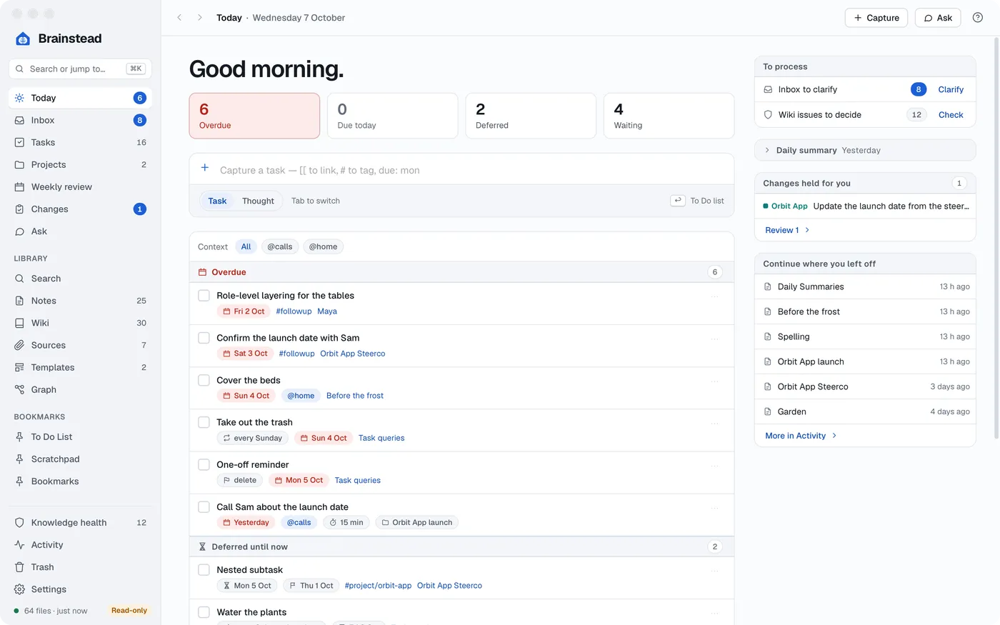
Your tasks live in your notes. Your notes build your wiki. And your assistant knows all of it.
Getting Things Done
What's overdue, what's due and who you're waiting on, on one screen. Every task is a - [ ] line in a note you already have.
Everything you capture lands in one place, emails and chats too. Turn each one into a task, a note or nothing, in a click.
Projects gather their tasks, notes and next actions, grouped by area of your life.
A guided weekly review walks you through it, step by step, so nothing slips.
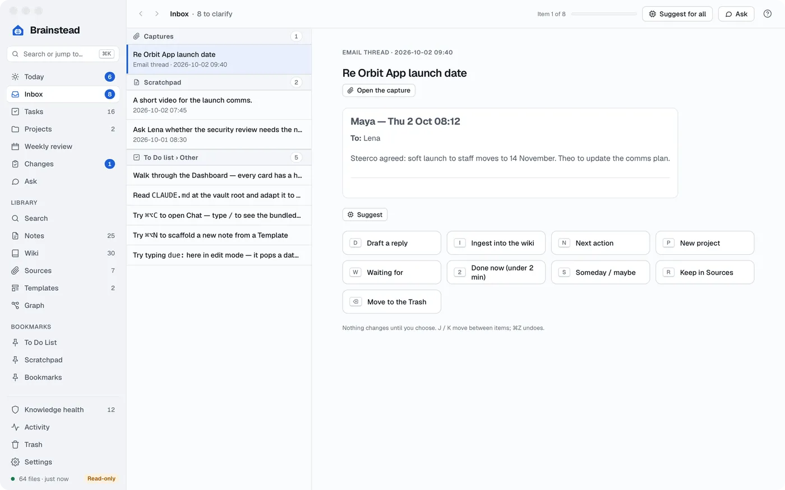
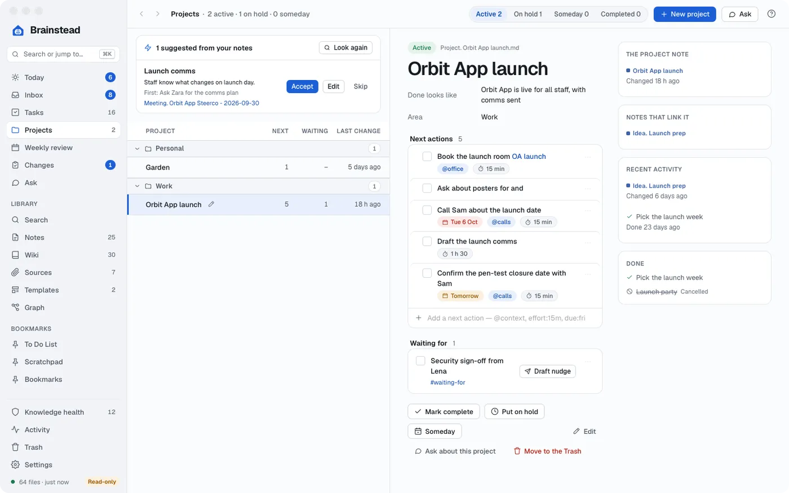
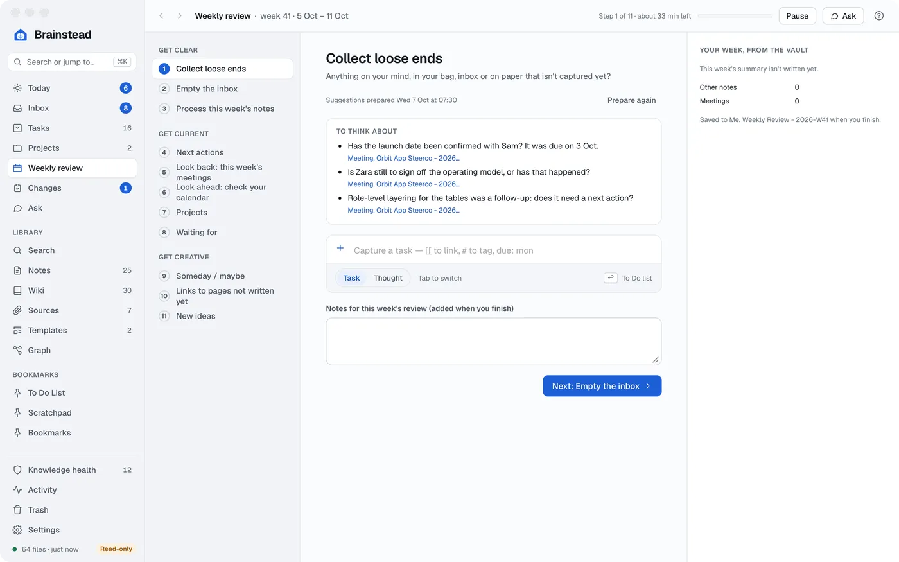
Notes
Read in View, write in Edit, and move between them in a click.
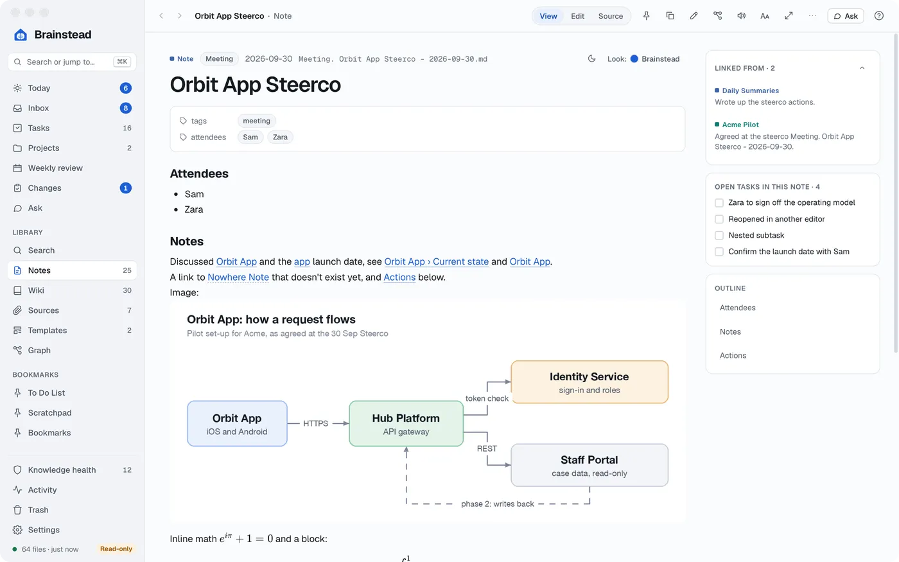
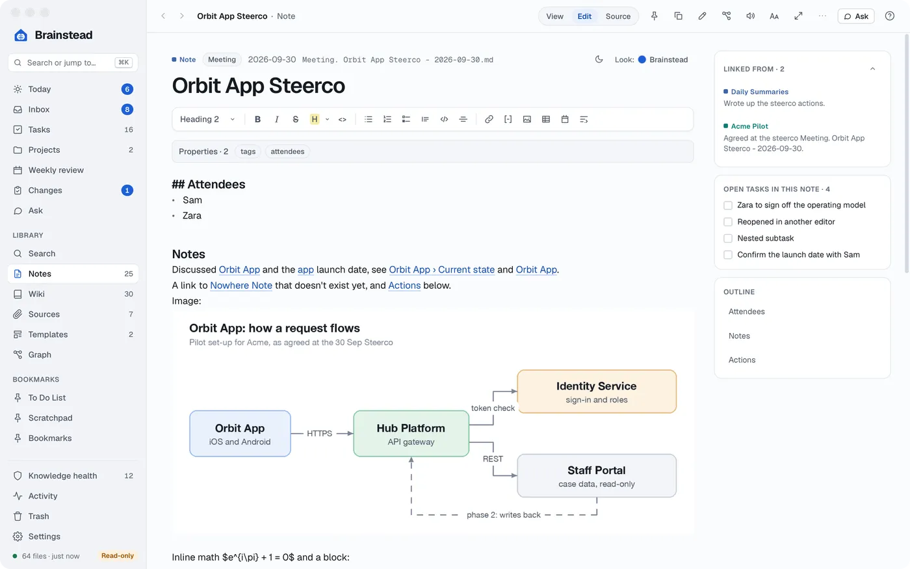
The wiki
Bring in what you've collected, and your assistant turns it into wiki pages you can trust.
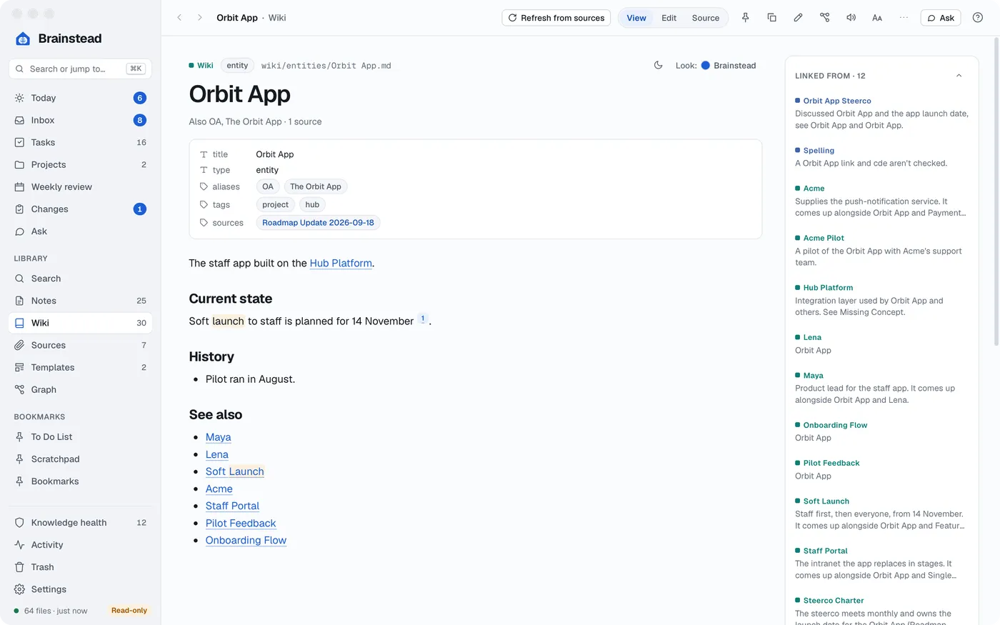
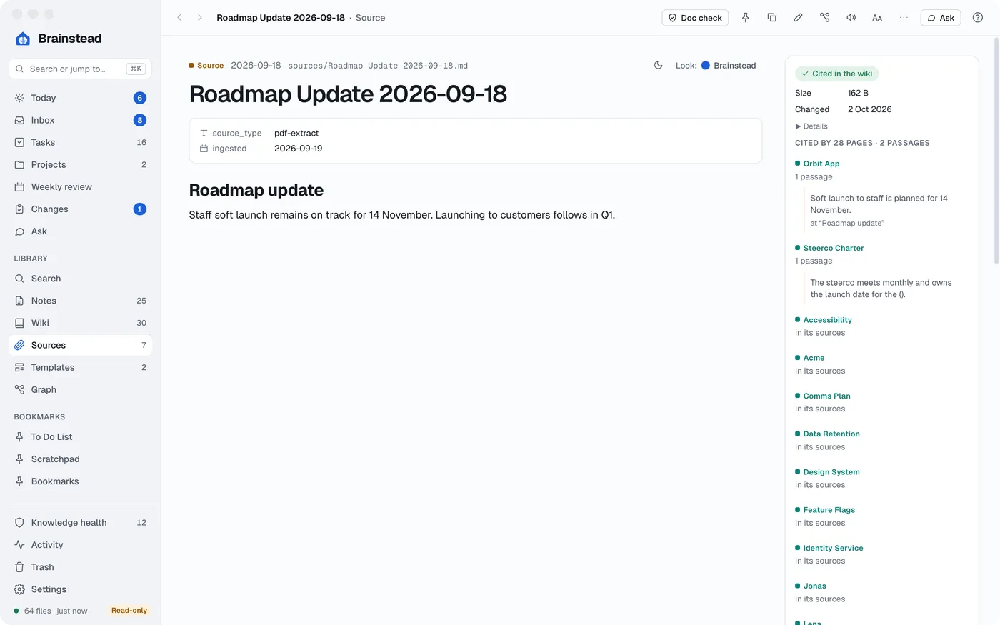
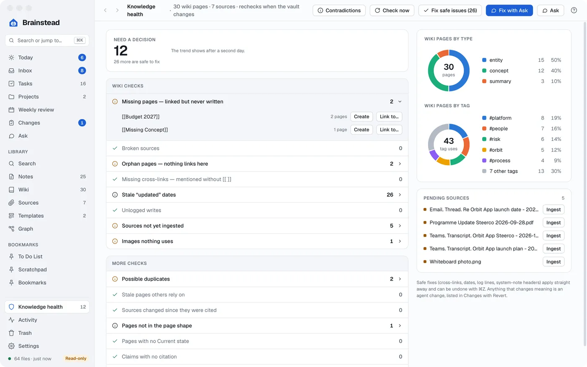
Knowledge health
Every time the vault changes, Brainstead checks the wiki: missing pages, broken links, stale facts, duplicates and claims with no source. Each day it looks for pages that contradict each other.
The fixes with one right answer take one click. The rest you can hand to your assistant.
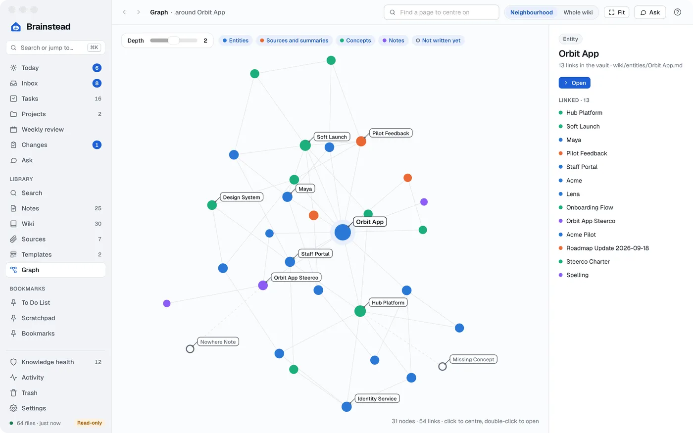
People, projects and ideas, linked as you write.
Ask
Chat with the assistant you already have on your Mac. It answers from your notes, drafts replies and makes changes for you. It can do almost anything you can do in the app.
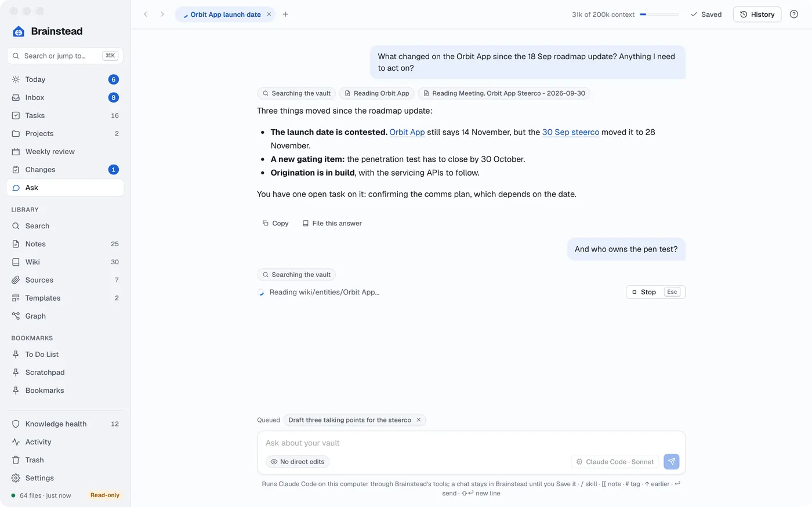
Changes
Every change an assistant makes is listed with its diff, its reason and the quotes it rests on. Revert any of it, even after you've edited since.
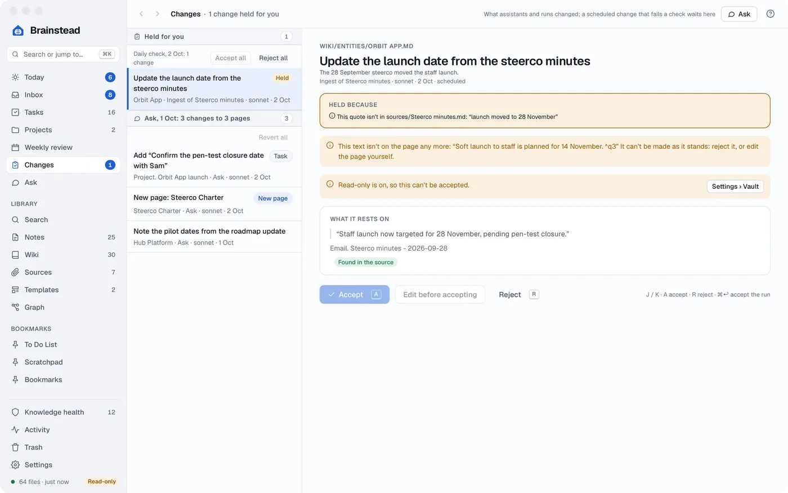
The small things that make it feel like home.
Press ⌘K to find any note, page, task, screen or command.
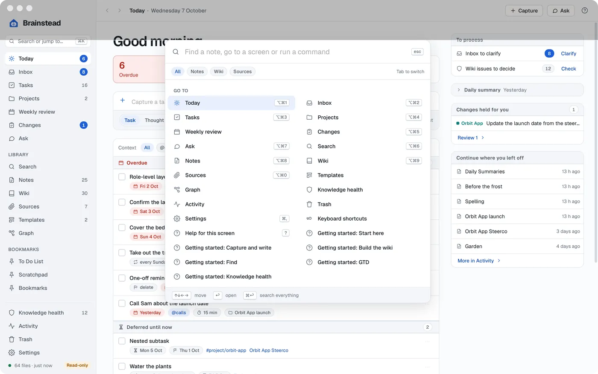
See what's due, capture a task and check on runs without opening the window.
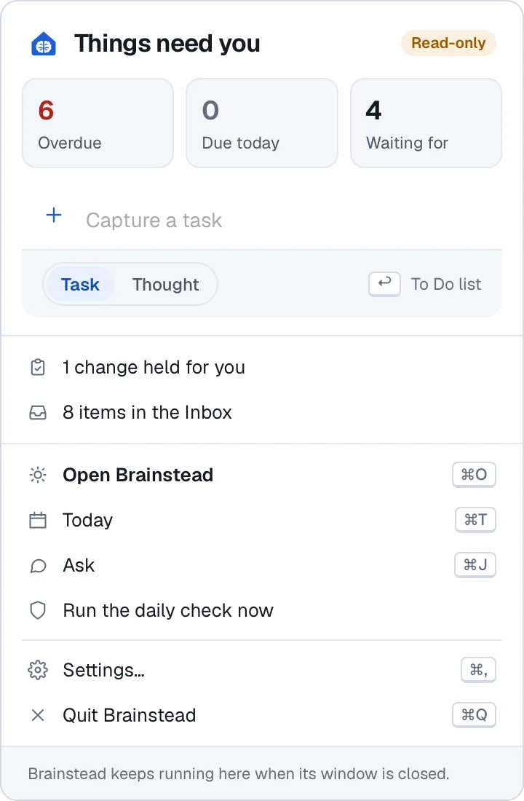
Dates, contexts and links become part of the task as you type.
Brainstead reads notes aloud in your Mac's voices, lighting up each word as it goes.
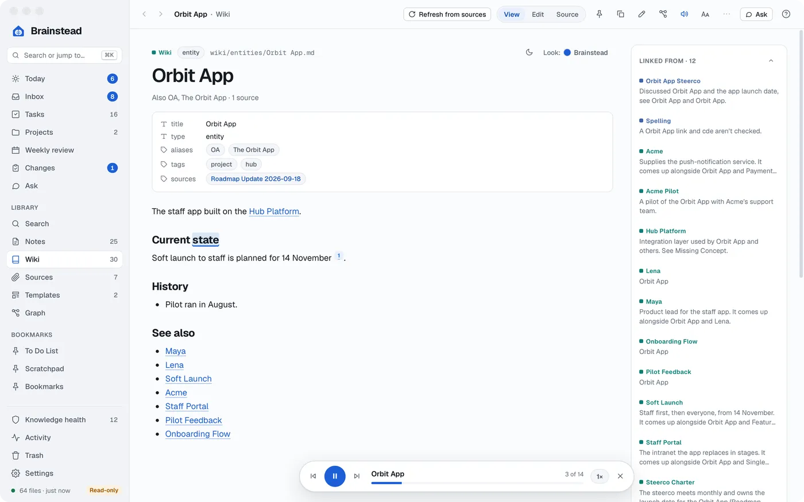
Daily and weekly summaries, written for you.
A Teams transcript becomes a note from your template.
Press ? anywhere for that screen's help.
Task queries, tables from your notes, diagrams and maths, right in the page. Templates turn a routine into one click.
Add Brainstead's tools to Claude Code, Codex or Copilot once, and use them from any folder.
~ % Added brainstead to user config
Your vault is a folder of files. Open it in any other editor, today or in twenty years.
Nothing to sign up for. Sync your vault with iCloud Drive, OneDrive or Dropbox, or don't.
Brainstead opens your vault without touching it, until you say it may.
Anything that adds code or edits a template is held until you accept it.
Saving changes only what you changed, and won't overwrite a file edited elsewhere.
Free software under the GPL. Read the code, change it, share it.
Yes. It follows Getting Things Done: an Inbox to clarify, next actions by context, projects, waiting for, someday/maybe and a guided weekly review. Every task is a line in one of your markdown notes.
Yes. Point it at any folder of markdown notes. It understands wikilinks, tags, task lines with dates, Tasks and Dataview queries and Templater templates, and it opens your folder read-only until you say it may make changes.
The ones already on your Mac: Claude Code, Codex, GitHub Copilot and Antigravity, with your own accounts. Brainstead doesn't need one to be useful, and every change an assistant makes is listed with Revert.
In your vault, a folder on your Mac. Brainstead has no account and no server. When you use an assistant, what it reads is sent to that assistant's provider, as it would be anywhere else.
Yes. Browser extensions for Outlook and Teams capture a thread, chat or meeting transcript in one click. It lands in your Inbox and can be turned into wiki pages or a meeting note.
It's free and open source under the GNU GPL. For now it's Mac only, for Apple silicon and macOS 14 or later.
Point it at your notes, or start a new vault.
Apple silicon (M1 or later), macOS 14 or later.